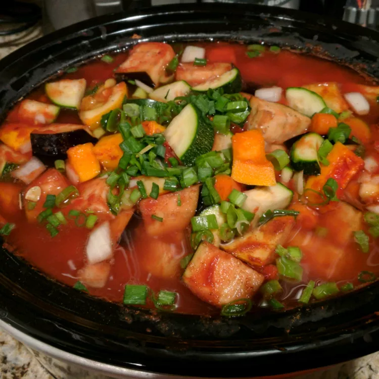

Home
Vegetable Stew
Mediterranean Stew

Description
A nice hearty crockpot vegetable stew that is wicked easy — just throw everything in the slow cooker to enjoy later.
Prep Time: 30 mins
Cook Time: 8 hrs
Total Time:8 hrs 30 mins
Servings: 10
Yield: 10 servings
Ingredients
- 1 butternut squash - peeled, seeded, and cubed
- 2 cups cubed eggplant, with peel
- 2 cups cubed zucchini
- 1 (10 ounce) package frozen okra, thawed
- 1 (8 ounce) can tomato sauce
- 1 cup chopped onion
- 1 ripe tomato, chopped
- 1 carrot, sliced thin
- ½ cup vegetable broth
- ⅓ cup raisins
- 1 clove garlic, chopped
- ½ teaspoon ground cumin
- ½ teaspoon ground turmeric
- ¼ teaspoon crushed red pepper
- ¼ teaspoon ground cinnamon
- ¼ teaspoon paprika
Directions
- In a slow cooker, combine butternut squash, eggplant, zucchini, okra, tomato sauce, onion, tomato,
carrot, broth, raisins, and garlic. Season with cumin, turmeric, red pepper, cinnamon, and paprika.
- Cover, and cook on Low for 8 to 10 hours, or until vegetables are tender.
Nutrition Facts (per serving)
- Calories: 122
- Fat: 1g
- Carbs: 31g
- Protein: 3g